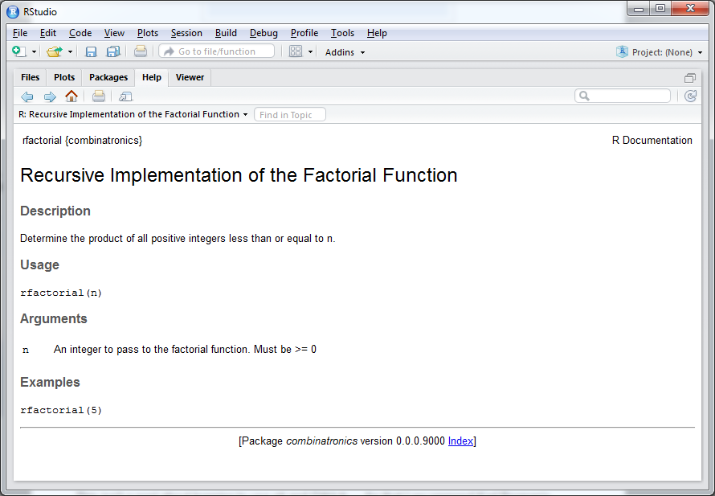
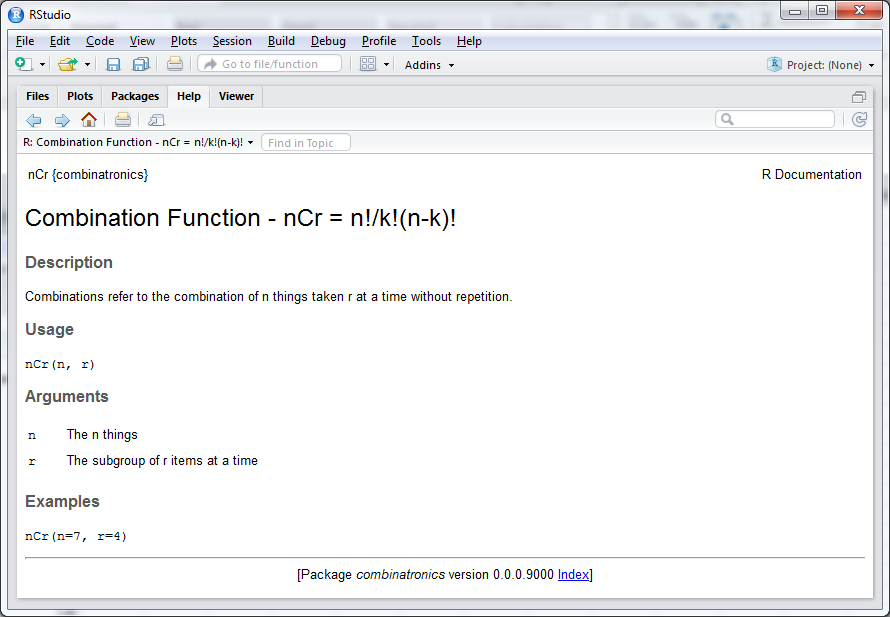

If you have a collection of user-defined functions written in R, it’s a good practice to compile the functionality into an R package which can then be loaded into any working session with R’s library call. This certainly beats copying and pasting the source from project to project, and makes it straightforward to share/distribute the functionality to other users and/or machines.
In this post I’ll walk through creating an R package using the devtools and roxygen2 libraries, which make the packaging process straightforward and intuitive. For our sample library, we’re going to compile a package from a collection of three functions: A Recursive Factorial function, a Combination function and a Permutation function, which will be identified as combinatronics. Here’s the contents of combinatronics.R:
# combinatronics.R ====================================================>
# |
# rfactorial(n) => Compute the factorial (recursively) of `n` |
# returns => int > 0 |
# |
# nCr(n, r) => Compute the combination of `n C r`: n!/k!(n-k)! |
# returns => int > 0 |
# |
# nPr(n, r) => Compute the permutation of `n P r`: n!/(n-k)! |
# returns => int > 0 |
# |
# =====================================================================>
rfactorial <- function(n) {
if (n<=1) {
return(1)
} else {
return(n*rfactorial(n-1))
}
}
nCr <- function(n, r) {
return(rfactorial(n)/(rfactorial(r)*(rfactorial(n-r))))
}
nPr <- function(n, r) {
return(rfactorial(n)/(rfactorial(n-r)))
}
The devtools library exposes the create function, which automates the setup of new source packages.
Pass a directory location with the desired package name appended to create, and devtools will generate the required files and directories for a new source package (note that create requires that the directory doesn’t yet exist).
For example, to initialize the combinatronics library package in the U:/Dev folder, you’d run the following from the R interpreter:
> create("U:/Dev/combinatronics")
In U:/Dev/combinatronics, the following directory tree is created:
#[U:]
# \
# [Dev]
# \
# [combinatronics]
# \
# R <dir>
# .gitignore <file>
# .Rbuildignore <file>
# combinatronics.Rproj <file>
# DESCRIPTION <file>
# NAMESPACE <file>
#
Populate as much information as you’d like in the DESCRIPTION file. At minimum, provide an email address so users can report bugs and/or provide feedback.
Copy the source file combinatronics.R, into the R directory created under U:/Dev/combinatronics.
Next, we’ll annotate the three functions in combinatronics.R in a way that can be parsed by roxygen2. After running this step, documentation will be generated that conforms to the R style, which can then be accessed like all other builtin or third-party library help files. The format is best demonstrated by example. Here’s combinatronics.R with roxygen2 compatible function annotations:
# combinatronics.R ====================================================>
# |
# rfactorial(n) => Compute the factorial (recursively) of `n` |
# returns => int > 0 |
# |
# nCr(n, r) => Compute the combination of `n C r`: n!/k!(n-k)! |
# returns => int > 0 |
# |
# nPr(n, r) => Compute the permutation of `n P r`: n!/(n-k)! |
# returns => int > 0 |
# |
# =====================================================================>
#' Recursive Implementation of the Factorial Function
#'
#' Determine the product of all positive integers less than or equal to n.
#' @param n An integer to pass to the factorial function. Must be >= 0
#' @export
#' @examples
#' rfactorial(5)
rfactorial <- function(n) {
if (n<=1) {
return(1)
} else {
return(n*rfactorial(n-1))
}
}
#' Combination Function - nCr = n!/k!(n-k)!
#'
#' Returns the combination of n things taken r at a time without repetition.
#' @param n The n things
#' @param r The subgroup of r items at a time
#' @export
#' @examples
#' nCr(n=7, r=4)
nCr <- function(n, r) {
return(rfactorial(n)/(rfactorial(r)*(rfactorial(n-r))))
}
#' Permutation Function - nPr = n!/(n-k)!
#'
#' Permutation relates to the act of arranging r members of a set n into some order.
#' @param n The superset
#' @param r The r members of the set n to arrange in order
#' @export
#' @examples
#' nPr(n=7, r=4)
nPr <- function(n, r) {
return(rfactorial(n)/(rfactorial(n-r)))
}
After saving the annotations, call the document function from roxygen2 to generate the documentation.
We’ll need to provide the absolute path to our development directory, U:/Dev/combinatronics to document (typical output is listed below):
> document("U:/Dev/combinatronics")
# output #
# Updating combinatronics documentation
# Loading combinatronics
# Updating roxygen version in U:\Dev\combinatronics/DESCRIPTION
# Writing NAMESPACE
# Writing rfactorial.Rd
# Writing nCr.Rd
# Writing nPr.Rd
document creates an additional directory identified as man in the combinatronics folder, which contains the compiled annotations for each of the functions in combinatronics.R. For our package, man contains rfactorial.Rd, nPr.Rd and nCr.Rd.
Finally, install the package. We need to set our working directory to the parent of our combinatronics folder (U:/Dev). Once the working directory is set, simply call install along with the name of the package (typical output is listed below):
setwd("U:/Dev")
install("combinatronics")
# output =>
# Installing combinatronics
# "C:/PROGRA~1/R/R-33~1.2/bin/x64/R" --no-site-file --no-environ --no-save --no-# restore \
# --quiet CMD INSTALL "U:/Dev/combinatronics" --library="U:/R/win-library/3.3" \
# --install-tests
# * installing *source* package 'combinatronics' ...
# ** R
# ** preparing package for lazy loading
# ** help
# *** installing help indices
# ** building package indices
# ** testing if installed package can be loaded
# * DONE (combinatronics)
# Reloading installed combinatronics
>
Upon completion, the interactive prompt will be returned. After importing the library, we can take a look at our package documentation in RStudio’s Help viewer. Running:
> library(combinatronics)
> ?rfactorial
…will output:

Similiarly for nCr:

That’s it!
If you’re interested in hosting your package on GitHub, users can easily clone your work with devtools’s install_github function. Check out the devtools documentation for more information.
In this post we explored R package development using devtools and roxygen2.
Compiling commonly-used functions into reusable code libraries eliminates unecessary duplication and reduces inconsistencies across codebases, but perhaps most importantly, we’ve demonstrated that it’s not at all difficult to do. A small investment of time upfront buys a lot of organization on the backend, especially as your project begins to scale. Happy coding!